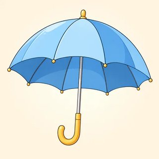
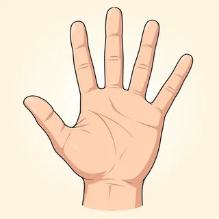
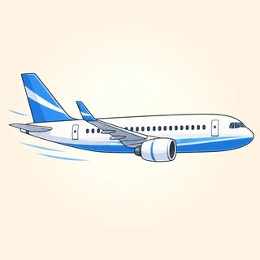
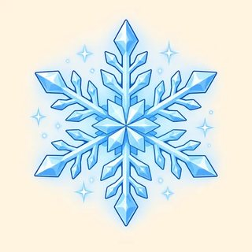

Independent English (B1) · Instructor Kit
Module 2
If & Imagining
Real. Imagined. Wished for.
Classes C4–C6 · the map
The verb shows how real it is
- 2.1 Always true & real futures: If you heat ice, it melts. If it rains, I'll take the bus.
- 2.2 Imagined: If I won the lottery, I'd travel. If I were you, I'd…
- 2.3 Wished for: I wish it were sunny. I wish I could sing.
NOTE Your real answer, an "imagine a person" card, or an invented one: all OK. You can say "Pass."
2.1 · New words · life hacks & superstitions
🔧 A life hack or 🍀 a superstition?

boil

freeze

go hard

charge

umbrella indoors

break a mirror

spill salt

my hand itches
2.1 · Zero conditional · always true
If / When + present, present
| 🔬 fact | If you heat ice, it melts. |
|---|---|
| 🔧 life hack | If you freeze grapes, they make great ice cubes. |
| ☕ habit | When I drink coffee late, I can't sleep. |
| ⚙️ how it works | If you press this key, the screen turns off. |
"If you heat ice, it melts." One day or every time? (Every time.) · "If I'm tired…" = "When I'm tired…"? (Yes, here.)
2.1 · First conditional · one real future
If + present, will + verb
| 📅 | If it rains this afternoon, I'll take the bus. |
|---|---|
| ⚠️ | If we leave now, we won't be late. |
| ➕ | If you finish early, you can go home. · If you see John, tell him hi. |
NEVER If it will rain ❌ · When I will get home ❌ → will lives in the RESULT
SAY IT If it RAINS ↗ | I'll take the BUS ↘
2.1 · when · if · unless · the comma
Sure, maybe, or "if not"?
| when | sure: When I get home, I'll call you. |
|---|---|
| if | maybe: If I get the job, I'll celebrate. |
| unless | = if … not: I'll be late unless I leave now. |
Will I get home? (Yes, sure.)
Will I get the job? (Maybe.)
"unless youdon't hurry"? (No! unless you hurry.)
Comma? If first → yes. If second → no.
Will I get the job? (Maybe.)
"unless you
Comma? If first → yes. If second → no.
2.1 · Model dialogue
Do you want to go for a walk?
A: Do you want to go for a walk this afternoon?
B: Maybe. If it stays dry, I'll come with you.
A: And if it rains?
B: Then I'll stay home — unless you really want company!
A: Ha! When I finish work, I'll text you. If the sky looks bad, we can just get coffee.
B: Perfect. If you text before three, I'll be ready.
2.1 · Groups of 3 · 20 min
Life Hacks & Superstitions
- Match the halves: 16 sentences
- Sort: 🔧 always true · 🍀 superstition · 📅 one real future
- Talk: Do you believe it? Have you tried it? (1 token = 1 turn)
- Write 2 real life hacks for the Life Hack Wall
How many sentences? (16.)
How many groups? (Three.)
Must you say what you believe? (No. "Pass" is OK.)
What goes on the sticky notes? (2 life hacks: If… / When…)
How many groups? (Three.)
Must you say what you believe? (No. "Pass" is OK.)
What goes on the sticky notes? (2 life hacks: If… / When…)
2.2 · New words · dreams & dilemmas
What would you do if…?
💰
win the lottery
👛
find a wallet
🦸
a superpower

travel the world

a famous singer

open a restaurant
DILEMMA a difficult choice · no one right answer
2.2 · Second conditional · imagined
If + past, would ('d) + verb
| ✅ | If I won the lottery, I'd buy a house by the sea. |
|---|---|
| ❌ | If they didn't work so much, they wouldn't be so tired. |
| ❓ | What would you do if you found a wallet? |
| be | If I were rich… · If it were warmer… |
| ➕ | If I had a car, I could drive you. · If she asked, I might say yes. |
WATCH past verb = NOT REAL (not past time!) · If I would have ❌ · If I had…, I will ❌
2.2 · Check the meaning · real or dream?
Do I really think it might happen?
📅 "If I have time, I'll call you."
Maybe I'll have time? (Yes.) → 1st · REAL
Maybe I'll have time? (Yes.) → 1st · REAL
💭 "If I had time, I'd call you."
Do I have time? (No.) → 2nd · DREAM
Do I have time? (No.) → 2nd · DREAM
"If I won the lottery, I'd quit my job." Did I win? (No.) Is won about the past? (No! Imagined.) Likely? (No.)
SAY IT I'll /aɪl/ = real · I'd /aɪd/ = dream · wouldn't /ˈwʊdənt/
2.2 · Friendly advice · model dialogue
If I were you, I'd…
Rosa: I got an offer for a new job. But it's a two-hour drive.
Sam: Really? If I were you, I'd take it. You always want a change.
Rosa: Maybe. If it were closer, I'd say yes right away.
Sam: If I were in your position, I might visit the city first.
Am I you? (No, impossible.) Is it an order? (No, soft advice.) "If I was you"? (Informal. Standard: were.)
2.2 · Groups of 3–4 · 18 min
👛 💰 🦸 Dilemma discussion
- The asker reads a card
- Everyone answers in turn: If I…, I'd… because…
- Discuss: "I'd do the same." · "Really? I wouldn't." · "That depends."
- Reporter: "Three of us would…, but Ana would…"
Who answers first? (Everyone, in turn.)
What do you add? (A reason: because…)
1 token = ? (1 turn.)
Don't like a card? ("Pass!")
What do you add? (A reason: because…)
1 token = ? (1 turn.)
Don't like a card? ("Pass!")
2.3 · New words · small, everyday wishes
☀️ weather · 🎸 skills · 🚌 the commute
rainy

cold
sing

swim

wait for the bus

a crowded train
2.3 · wish + past · were · could
A wish is the opposite of now
| Real now | My wish |
|---|---|
| It's raining. | I wish it were sunny. |
| I live far from work. | I wish I lived closer. |
| I have a lot of work. | I wish I didn't have so much work. |
| I can't sing. | I wish I could sing. |
SAY IT I wish it were SUNny. · If ONly it were FRIday!
2.3 · wish + would · hope vs wish
😤 I wish the bus would come!
| 😤 would | someone / something else: I wish my neighbor would turn the music down. |
|---|---|
| 🤞 hope | possible: I hope it's sunny tomorrow. |
| 🌠 wish | not real now: I wish it were sunny. |
Does the bus come on time? (No.) About me or the bus? (The bus.)
"I wish Iwould be taller"? (No → I wish I were taller.)
Friend's interview tomorrow? (I hope you get it!)
"I wish I
Friend's interview tomorrow? (I hope you get it!)
WATCH I wish I can ❌ · I wish I have ❌ · I wish it will ❌ · I wish you come ❌
2.3 · Mingle 12 min · Pairs 13 min
🌠 Small Wishes, Real Fixes
- Mingle: "Do you wish you could…?" — "Yes, I do!"
- Cards: A makes a small wish
- B: 💭 "If it were…, what would you do?" or 🔧 "If I were you, I'd…"
- Then 3 of your own small wishes: weather · a skill · the commute
Big wishes or small? (Small, everyday.)
Must you share your real wishes? (No. Card, invented, or "Pass.")
What does B do? (A dream question or a fix.)
Must you share your real wishes? (No. Card, invented, or "Pass.")
What does B do? (A dream question or a fix.)
You can now talk about the real and the imagined
Module 2 done 🎉
- 🔧 If you heat ice, it melts. 📅 If it rains, I'll take the bus — unless you drive me!
- 💭 If I won the lottery, I'd travel. If I were you, I'd take the job.
- 🌠 I wish it were sunny. I wish I could sing. I wish the bus would come!
Homework: online lessons 2.1–2.3 with 🔊. Next: Module 3, She said she was tired.